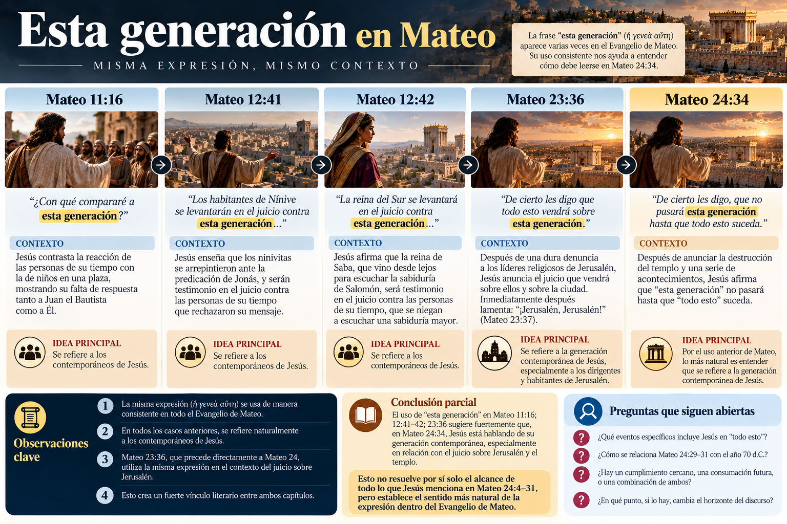
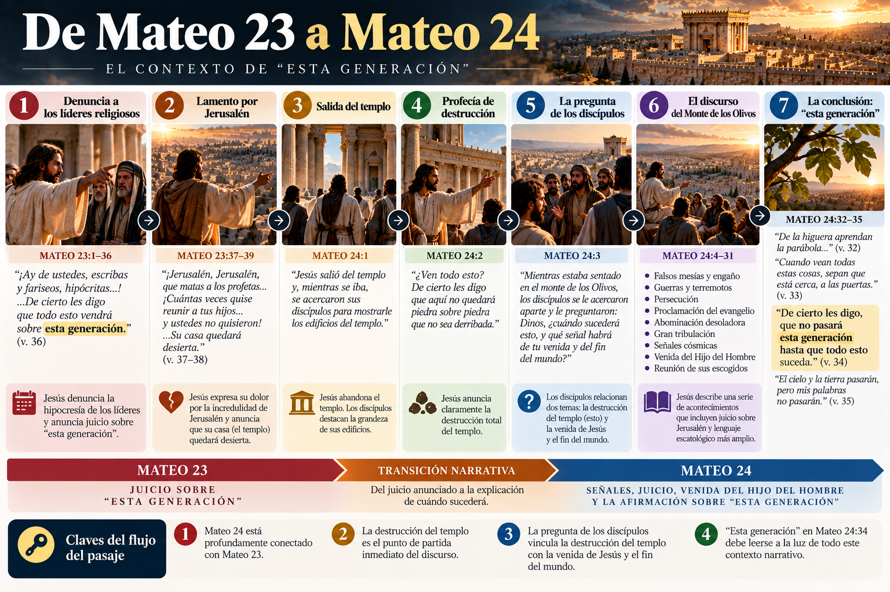
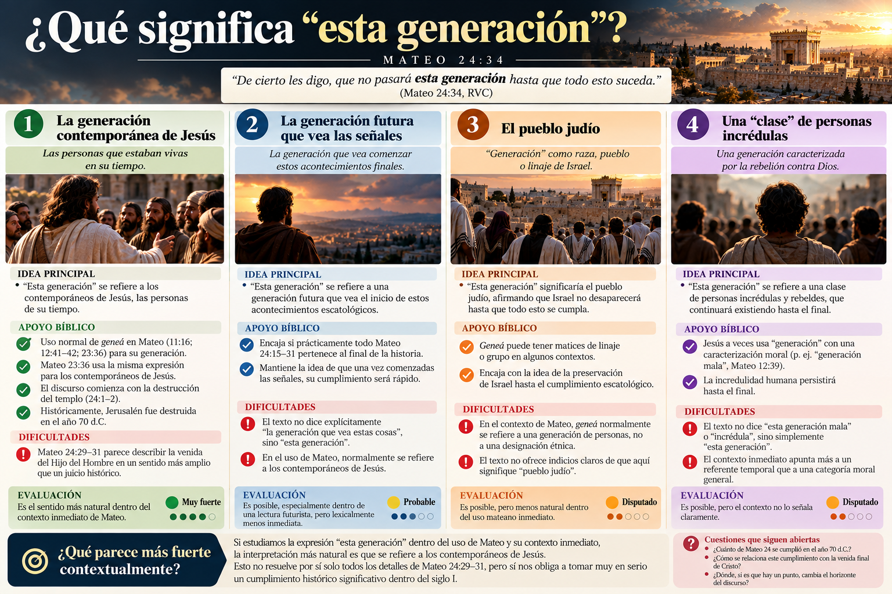
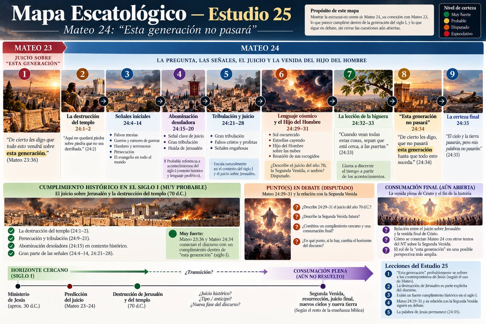

“De cierto les digo, que no pasará esta generación hasta que todo esto suceda.”
Mateo 24:34 (RVC)
Este versículo es uno de los puntos decisivos del discurso del Monte de los Olivos. Después de hablar de guerras, persecución, la abominación desoladora, gran tribulación y la venida del Hijo del Hombre, Jesús hace una afirmación que parece poner un límite temporal a sus palabras: “esta generación no pasará”.
La pregunta es inevitable: ¿qué significa “esta generación”? ¿Los contemporáneos de Jesús? ¿El pueblo judío? ¿Una generación futura que vea comenzar las señales? ¿Una generación caracterizada por incredulidad?
No conviene decidirlo según un sistema escatológico previo. Primero debemos dejar que Mateo y el contexto inmediato hablen.
📖 1. El contexto inmediato: la higuera
“De la higuera aprendan la parábola: Cuando ya sus ramas se ponen tiernas y brotan las hojas, ustedes saben que el verano está cerca. Así también ustedes, cuando vean todas estas cosas, sepan que está cerca, a las puertas.”
Mateo 24:32–33 (RVC)
La lógica es sencilla: ramas tiernas → hojas → verano cercano. De la misma manera: “estas cosas” → algo está cerca.
La higuera aquí no necesita representar a Israel. Jesús utiliza una observación cotidiana para enseñar discernimiento temporal.
¿Qué significa “todas estas cosas”?
Jesús había mencionado falsos mesías, guerras, hambres y terremotos, persecución, proclamación del evangelio, abominación desoladora, gran tribulación, fenómenos cósmicos y la venida del Hijo del Hombre. Entonces llega: “no pasará esta generación hasta que todo esto suceda”. La expresión conecta claramente el versículo 34 con lo anterior.
🇬🇷 2. La palabra clave: γενεά (geneá)
Su significado habitual puede referirse a una generación de personas contemporáneas, aunque el contexto debe decidir su sentido preciso.
Lo importante es observar cómo Mateo mismo utiliza la palabra.
📚 3. ¿Cómo usa Mateo la expresión “esta generación”?
Este es probablemente el dato exegético más importante.
“¿Con qué compararé a esta generación?”
Mateo 11:16
Está hablando de las personas de su tiempo que reaccionaban ante Juan el Bautista y ante Jesús.
“Los habitantes de Nínive se levantarán en el juicio contra esta generación...”
Mateo 12:41
“La reina del Sur se levantará en el juicio contra esta generación...”
Mateo 12:42
Y especialmente:
“De cierto les digo que todo esto vendrá sobre esta generación.”
Mateo 23:36
Este último texto es extraordinariamente importante porque aparece inmediatamente antes de Mateo 24.

🔥 4. Mateo 23 cambia mucho la lectura
Mateo 24 no comienza realmente con guerras y terremotos. Narrativamente, debemos retroceder.
“...para que recaiga sobre ustedes toda la sangre justa que se ha derramado sobre la tierra... De cierto les digo que todo esto vendrá sobre esta generación.”
Mateo 23:35–36
Después Jesús lamenta sobre Jerusalén y declara que su casa quedará desierta. Entonces sale del templo, los discípulos le muestran los edificios y Jesús anuncia que no quedará piedra sobre piedra.

⏳ 5. Interpretación 1 — La generación contemporánea de Jesús
Esta lectura entiende que Jesús se refiere principalmente a las personas que estaban vivas durante su ministerio. Es el sentido más natural de “esta generación” y coincide con el uso anterior de Mateo.
A favor
Históricamente, Jerusalén y el templo fueron destruidos por los romanos en el año 70 d.C., aproximadamente cuatro décadas después del ministerio de Jesús. Por tanto, existe una correspondencia temporal notable.
El problema
El desafío aparece cuando llegamos a Mateo 24:29–31: el sol se oscurece, el Hijo del Hombre viene sobre las nubes y envía a sus ángeles. Si estos versículos describen exclusivamente la Segunda Venida corporal y visible de Cristo al final de la historia, resulta difícil decir que “todo esto” ocurrió dentro de aquella generación.
🌍 6. Interpretación 2 — La generación futura que vea las señales
Una interpretación futurista común sostiene que “esta generación” significa la generación que vea comenzar estos acontecimientos finales. Así, Jesús no estaría hablando necesariamente de su propia generación, sino de una generación futura.
La dificultad es que el texto no dice explícitamente “la generación que vea estas cosas”. Dice “esta generación”, y Mateo ya utiliza esa expresión varias veces para los contemporáneos de Jesús.
✡️ 7. Interpretación 3 — “Generación” significa el pueblo judío
Otra propuesta sostiene que geneá aquí significa aproximadamente raza, pueblo o linaje. Así, Jesús estaría diciendo que el pueblo judío no desaparecerá hasta que todo esto se cumpla.
El problema principal es lexical y contextual. Cuando Mateo escribe “esta generación” normalmente está hablando de una generación concreta, no haciendo una declaración acerca de la supervivencia étnica de Israel.
🧠 8. Interpretación 4 — Una “clase” de personas incrédulas
Otra propuesta observa que Jesús frecuentemente caracteriza a su generación como “generación mala y adúltera”. Desde esta perspectiva, “esta generación” podría significar algo parecido a esta clase de humanidad rebelde e incrédula.
“La generación mala y adúltera demanda una señal...”
Mateo 12:39
Pero Mateo 24:34 no dice “esta generación mala” o “esta generación incrédula”. Simplemente dice “esta generación”.

🔎 9. Hay una pista enorme en Mateo 16
“Porque el Hijo del Hombre vendrá en la gloria de su Padre con sus ángeles... De cierto les digo que algunos de los que están aquí no morirán hasta que hayan visto al Hijo del Hombre venir en su reino.”
Mateo 16:27–28
Aquí aparece nuevamente una combinación de Hijo del Hombre + venida + límite temporal relacionado con los contemporáneos de Jesús.
Se han propuesto la transfiguración, la resurrección, Pentecostés, la expansión del reino, el juicio sobre Jerusalén y una anticipación de la Segunda Venida.
☁️ 10. El gran problema sigue siendo Mateo 24:29–31
El estudio anterior dejó deliberadamente abierta una cuestión. Mateo 24 utiliza imágenes como sol oscurecido → estrellas cayendo → poderes celestes sacudidos → Hijo del Hombre sobre las nubes.
Este lenguaje tiene antecedentes importantes en el Antiguo Testamento. Isaías utiliza lenguaje cósmico para describir juicio sobre naciones, y Daniel 7 presenta al Hijo del Hombre viniendo con las nubes hacia el Anciano de días para recibir dominio.
A — Segunda Venida
Mateo 24:29–31 describe directamente el regreso visible de Cristo al final de la historia. Si es así, debemos explicar por qué Jesús dice inmediatamente “esta generación no pasará”.
B — Juicio y entronización
Mateo 24:29–31 utiliza lenguaje profético del Antiguo Testamento para describir el juicio histórico sobre Jerusalén y la vindicación/entronización del Hijo del Hombre. Si es así, Mateo 24:34 encaja mucho más directamente.
🏛️ 11. El año 70 d.C. no puede quedar fuera del estudio
Debemos evitar dos extremos: interpretar todo Mateo 24 como si el año 70 no tuviera importancia, o afirmar inmediatamente que absolutamente todo quedó agotado en ese año.
🧩 12. Entonces, ¿qué interpretación de “esta generación” parece más fuerte?
Si estudiamos solamente la expresión ἡ γενεὰ αὕτη — “esta generación” y preguntamos cómo Mateo utiliza normalmente esas palabras, la conclusión más natural es:
No porque una escuela preterista lo necesite ni porque queramos negar la Segunda Venida, sino porque ese parece ser el sentido normal de la expresión dentro de Mateo, especialmente después de Mateo 23:36.
Eso nos obliga a tomar muy en serio que Jesús esperaba un cumplimiento histórico significativo de sus palabras dentro del siglo I. Pero todavía no demuestra que cada detalle escatológico de Mateo 24 haya quedado completamente agotado en el año 70.
⚠️ 13. Un error frecuente: empezar por el sistema
Podemos razonar: “Mateo 24 habla de la Segunda Venida; por lo tanto, ‘esta generación’ tiene que significar una generación futura”. Pero también podemos cometer el error contrario: “‘Esta generación’ significa los contemporáneos de Jesús; por lo tanto absolutamente todo Mateo 24 tuvo que cumplirse en el año 70”.
Ambos razonamientos pueden estar dejando que una conclusión previa controle todos los demás textos.
Y cuando todavía queda tensión: ❓ dejamos la tensión abierta.
✝️ 14. Jesús coloca su palabra por encima del mundo visible
“El cielo y la tierra pasarán, pero mis palabras no pasarán.”
Mateo 24:35 (RVC)
El templo parecía permanente. Jerusalén parecía estable. El cielo y la tierra parecen todavía más permanentes. Pero Jesús afirma que su palabra es más segura que aquello que los discípulos pueden ver.
El centro del discurso no son las guerras, la identificación obsesiva de señales ni calcular calendarios. Es Cristo. Los edificios pueden caer. Los imperios pueden caer. El orden presente puede pasar. La palabra de Jesús permanece.
🗺️ Mapa Escatológico — actualización del Estudio 25
Estado actual

📌 Conclusión
La lectura contextual más fuerte de Mateo 24:34 es sorprendentemente sencilla: “Esta generación” probablemente significa la generación contemporánea de Jesús.
El uso de geneá en Mateo, especialmente Mateo 23:36, favorece fuertemente esa lectura. Esto obliga a conceder mucho más peso al siglo I y a la destrucción de Jerusalén en el año 70 de lo que algunas interpretaciones futuristas han reconocido.
Pero no obliga automáticamente a concluir que toda la esperanza escatológica cristiana, incluida la resurrección, el juicio final y la venida definitiva de Cristo, se cumplió entonces.
Ese interrogante deberá resolverse acumulativamente con los próximos textos, no imponiendo una respuesta antes de estudiarlos.